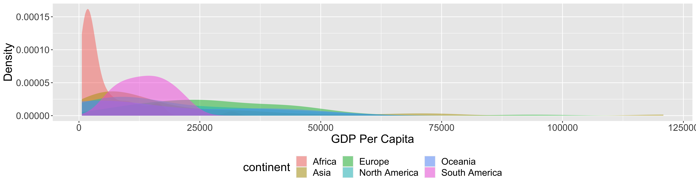
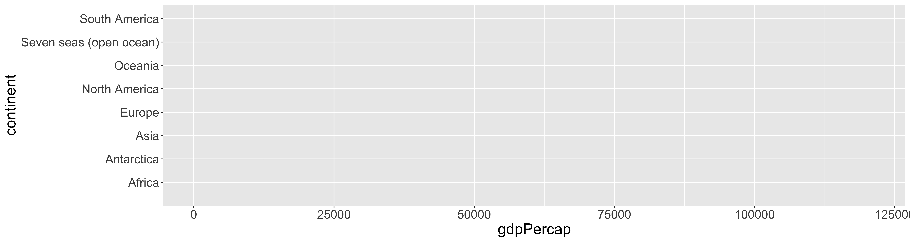
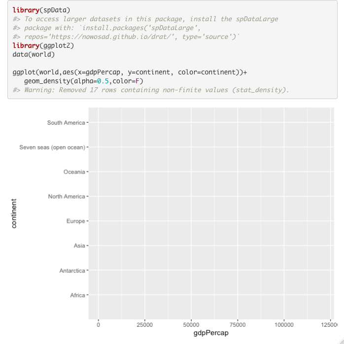

library(tidyverse)
library(reprex)
library(sf)
library(spData)
data(world)You want to make a figure illustrating the distribution of GDP per
capita for all countries within each continent using the
world data in the spData package.
Your desired figure looks something like the following: 
You have started working on the figure but can’t seem to make it work like you want. Here is your current version of the code (and the resulting figure):
ggplot(world,aes(x=gdpPercap, y=continent, color=continent))+
geom_density(alpha=0.5,color=F)
The second figure is quite different from the one you want. You want
to ask for help and so you know that you need to make a reproducible
example. Starting with the code above, make the required edits so you
can use reprex() to generate a nicely formatted example
that you could post as a github ‘issue,’ send as an email or post to a
forum to ask for help. See the reading for more help. Note:
you do not need to recreate the first figure above, only to use
reprex() to illustrate your question and problematic
code.
reprex(venue="gh") to generate the reproducible
example and put the content on your clipboardreprex(venue="gh") to generate the reproducible
exampleIt should look something like this:

Fix the code above to recreate the first figure.